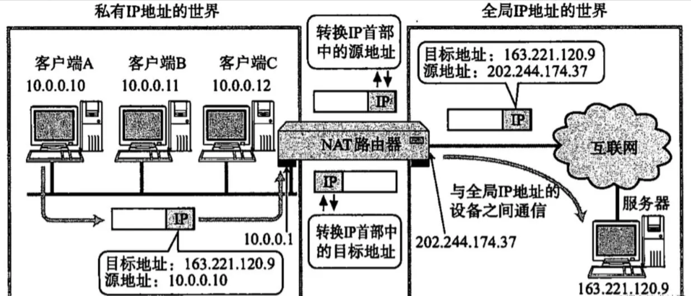
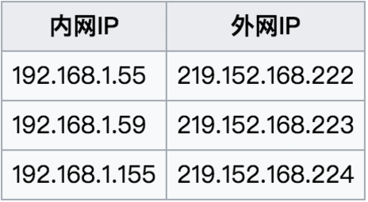
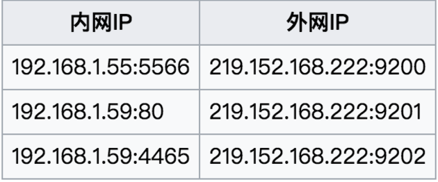

内网穿透，外网访问虚拟机web服务
什么是内网穿透
简单的说，就是想要外网访问内网的服务。
内网穿透，即NAT（Network Address Translator）穿透，是指计算机在内网（局域网）内使用私有IP地址，在连接外网（互联网）时使用全局IP地址的技术。该技术被普遍使用在有多台主机但只通过一个公有IP地址访问的私有网络中。
举个例子：配置了一个服务器 Server A，在同一个局域网，就可以通过自己的笔记本使用SSH连接，当不在统一局域网，就没有办法直接使用SSH连接了，这个时候就需要进行NAT穿透，可以使用SSH连接Server A。
NAT原理解析
NAT（Network Address Translation，网络地址转换），也叫做网络掩蔽或者IP掩蔽。NAT是一种网络地址翻译技术，主要是将内部的私有IP地址（private IP）转换成可以在公网使用的公网IP（public IP）。
- 当信息由局域网向因特网传递时，源地址从专有地址转换为公用地址。由路由器跟踪每个连接上的目的地址和端口。
- 当数据返回路由器时，通过记录的连接跟踪数据来决定该转发给内部网的哪个主机；如果此时如果有多个公用地址可用，当数据包返回时，则会客户机的端口号可以用来分解数据包。

首先NAT路由器将发送源地址从私有IP地址(10.0.0.10)转换为全局的IP地址 (202.244.174.37)再发送数据
当数据从地址163.221.120.9发过来时，NAT路由器将目标地址从原句IP地址(202.244.174.37)先转换成私有IP地址10.0.0.10以后再转发
NAT实现方式及主要类型
1.NAT实现方式
1）静态NAT：也就是静态地址转换。是指一个公网IP对应一个私有IP，是一对一的转换，同时注意，这里只进行了IP转换，而没有进行端口的转换。举个栗子：

2）NAPT：端口多路复用技术。与静态NAT的差别是，NAPT不但要转换IP地址，还要进行传输层的端口转换。具体的表现形式就是，对外只有一个公网IP，通过端口来区别不同私有IP主机的数据。再举个栗子。

NAT的主要类型
对于NAPT我们主要分为两大类：锥型NAT和对称型NAT。
其中锥型NAT又分：完全锥型，受限锥型和端口受限锥型。
概括的说：对称型NAT是一个请求对应一个端口；锥型NAT（非对称NAT）是多个请求（外部发向内部）对应一个端口，只要源IP端口不变，无论发往的目的IP是否相同，在NAT上都映射为同一个端口，形象的看起来就像锥子一样。下面分别介绍这四种类型及其差异。